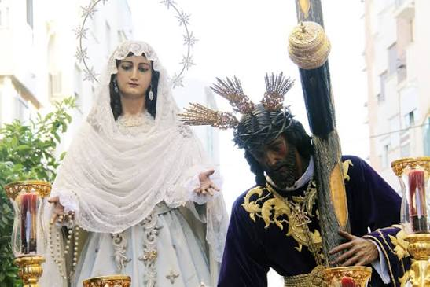
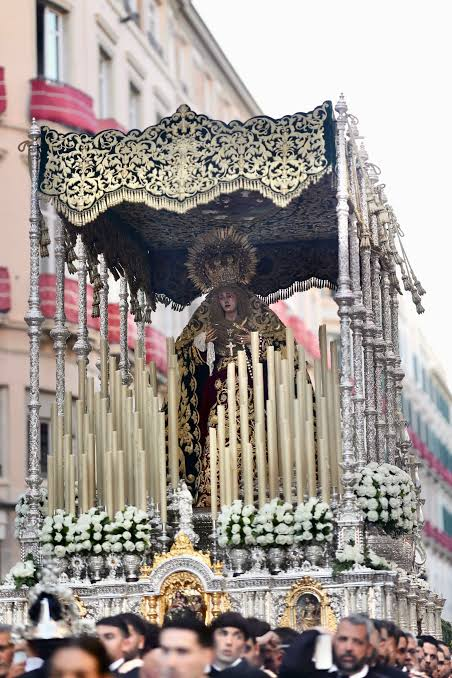
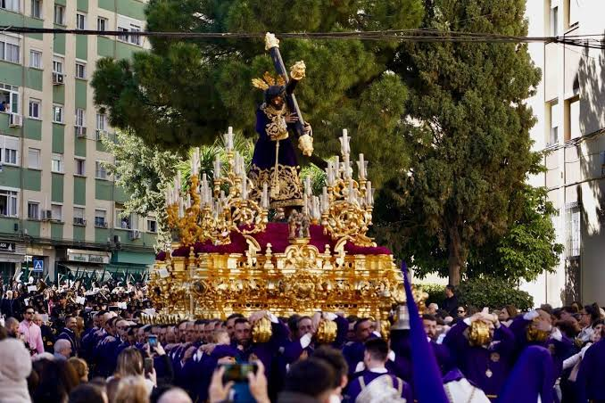
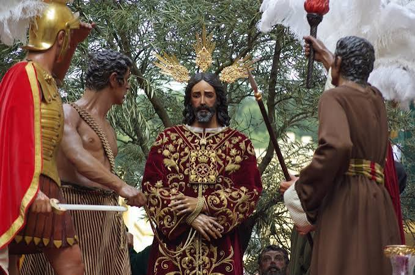
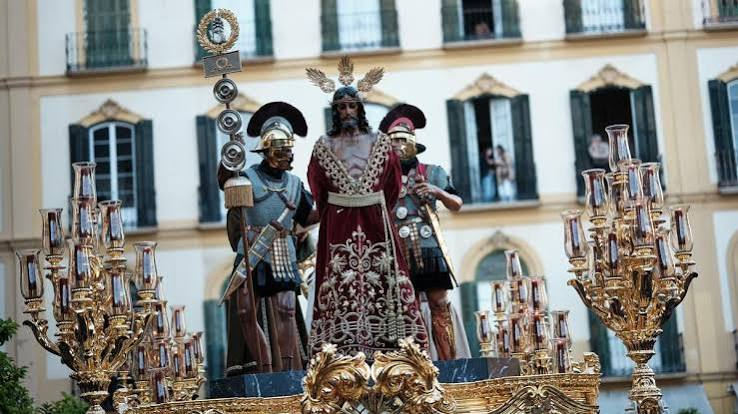
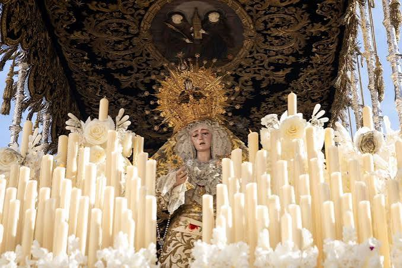

Historia, devoción y el caminar del Cautivo
El Martes Santo malagueño destaca por su elegancia barroca y arraigo popular. El barrio de la Victoria se convierte en protagonista indiscutible con la salida de El Rico, célebre por liberar a un preso cada año, y la Virgen de la Piedad. Completan esta magnífica jornada procesiones de gran peso devocional y estético como Nueva Esperanza, Humillación, Rescate y la emblemática cofradía de la Sentencia.

Rocío
Conocida como la "Novia de Málaga" por la túnica y el trono completamente blancos de la Virgen. Es una de las grandes devociones de la ciudad y desata pasiones en La Victoria.

Penas
Famosa en toda España por el impresionante manto de flores naturales que confeccionan los jardineros de la ciudad para la Virgen cada Martes Santo.

Nueva Esperanza
Es la cofradía con el recorrido más largo de la Semana Santa malagueña, cruzando la ciudad desde el barrio de Nueva Málaga en una auténtica demostración de fe y esfuerzo.

Rescate
Su seña de identidad es el trono del Cristo, el único de Málaga con estilo neogótico, y la explosión de colores morados y telas de raso de las túnicas de sus nazarenos.

Sentencia
Tiene su sede en la calle Frailes. Destaca por el imponente misterio que recrea el juicio de Pilatos y la marcha "Malagueña Virgen de la Paloma" interpretada tras la Virgen.

Estrella
Con sede en la Iglesia de Santo Domingo, en El Perchel. Destaca por el andar elegante de sus tronos, el carisma de sus portadores y la inmensa devoción a la Virgen de la Estrella.